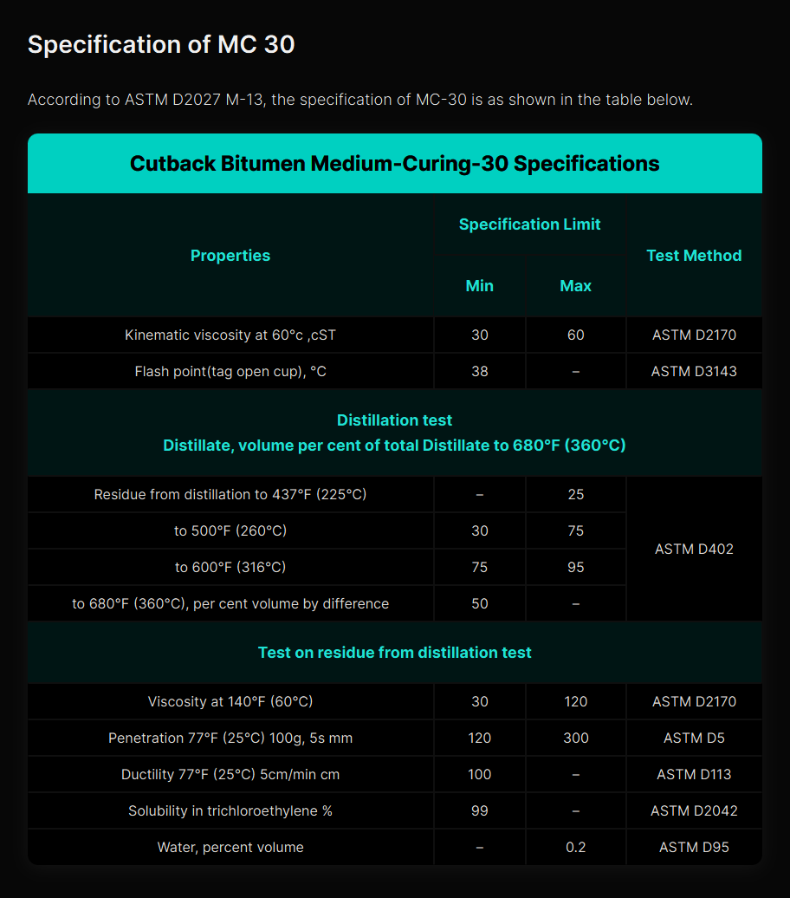

Cutback Bitumen MC‑30 – General Description │ Iran Bitumen Supply Int │ IBSI Export
Cutback Bitumen MC‑30 is a medium‑curing cutback asphalt produced by dissolving high‑quality penetration‑grade bitumen in kerosene or other medium‑volatility petroleum solvents. This temporary reduction in viscosity allows the bitumen to be applied at lower temperatures without heating, making MC‑30 ideal for prime coating and cold‑applied road construction works. The solvent acts as a cutter, reducing the thickness of the bitumen so it can penetrate deeply into granular surfaces. Once applied, the solvent gradually evaporates, leaving behind a strong bituminous binder that stabilizes the base layer and prepares it for the application of hot mix asphalt. This curing process is essential for creating a durable bond between the base course and the final asphalt layer. At IBSI Export, our MC‑30 is produced from premium vacuum residue feedstock and blended with carefully selected petroleum solvents to ensure consistent curing behavior and full compliance with ASTM D2028 specifications. The thermoplastic nature of the base bitumen ensures reliable performance across a wide range of temperatures, softening when heated and hardening as it cools.
Understanding How MC‑30 Works
Cutback bitumen is created by blending bitumen with volatile solvents such as kerosene, white spirit, gasoline, or naphtha. In MC‑30, the solvent content is optimized to achieve a medium curing rate, allowing the bitumen to penetrate the base course effectively before hardening. This reduced viscosity is especially valuable in cold weather, where heating equipment may not be available or practical. As the solvent evaporates, the bitumen regains its original hardness and viscosity, forming a durable, waterproof, and adhesive layer that enhances the performance of the pavement structure.
Applications of Cutback Bitumen MC‑30
Cutback Bitumen MC‑30 is widely used in road maintenance and construction, particularly as a prime coat on granular base courses. Its ability to penetrate deeply into the surface makes it ideal for preparing the base layer before applying hot mix asphalt. MC‑30 binds loose particles, fills capillary voids, and creates a waterproof barrier that improves the adhesion and durability of the final asphalt layer. MC‑30 is also used in cold‑applied asphalt mixes, patching materials, and stockpile mixes. In waterproofing applications, it is applied to seal surfaces, protect against moisture ingress, and bond mineral particles. It is commonly used to coat and stabilize non‑asphalt surfaces before further construction treatments. Because MC‑30 does not require heating, it is especially useful in remote locations, small‑scale projects, and cold‑weather operations where hot‑applied binders are impractical.
Packing Options for Cutback Bitumen MC‑30
At IBSI Export, MC‑30 is supplied in packaging formats designed for safe handling and efficient transport. It is available in bulk tankers for large‑scale projects and in new steel drums placed on pallets to prevent leakage during containerized shipping. These packaging options ensure that the product arrives in optimal condition and is ready for immediate use on site.

Specification of Bitumen MC‑30